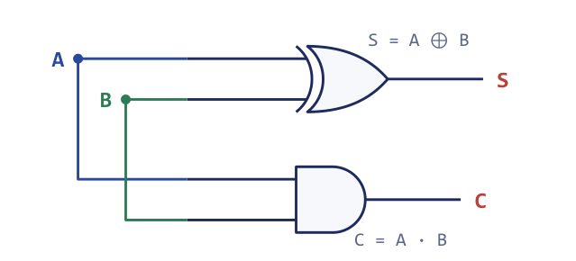
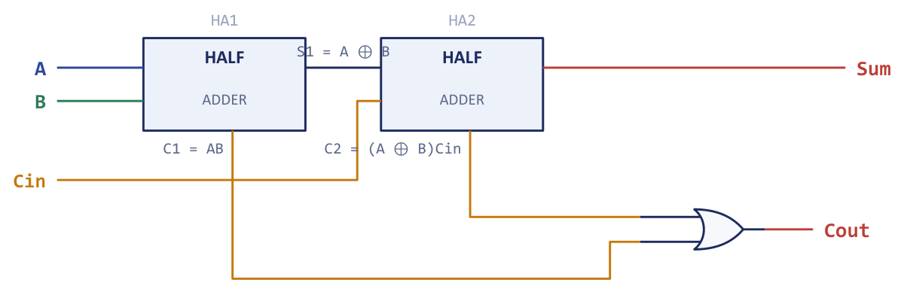
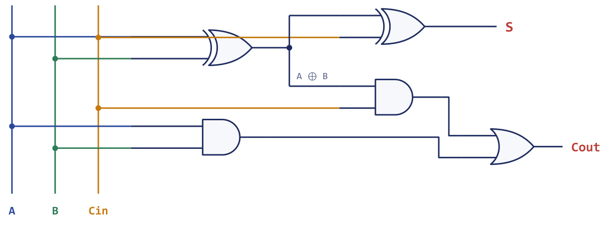
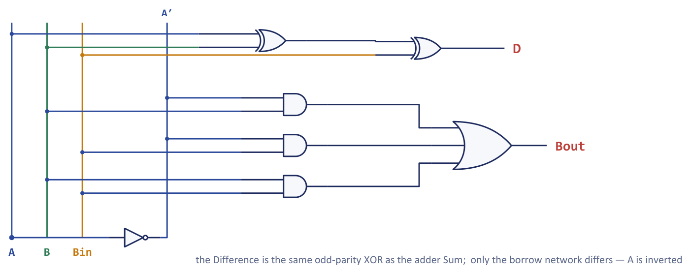
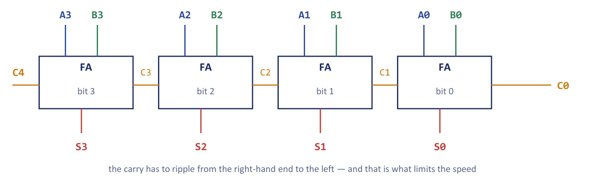
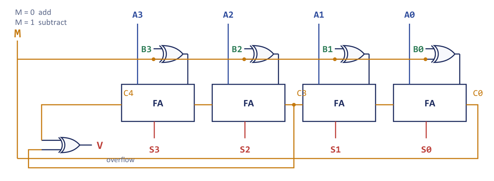
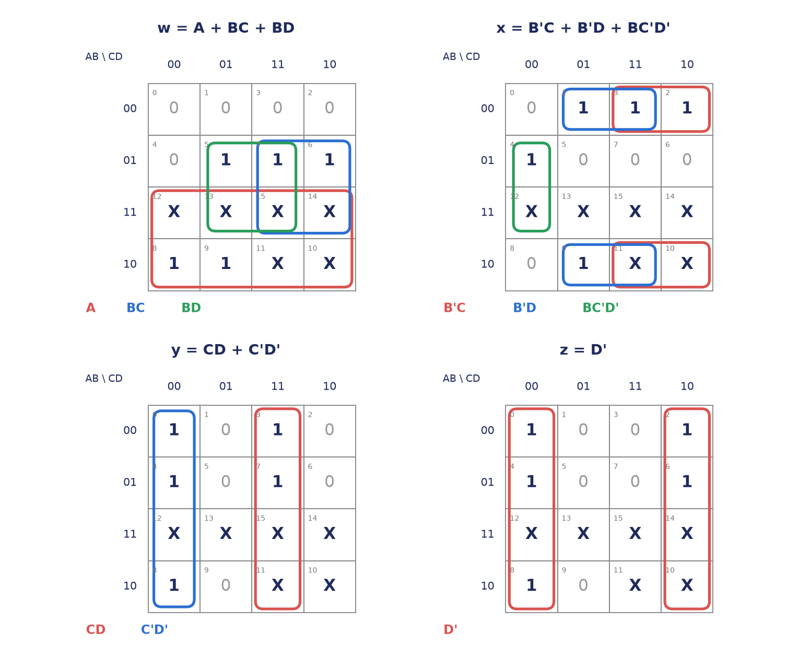
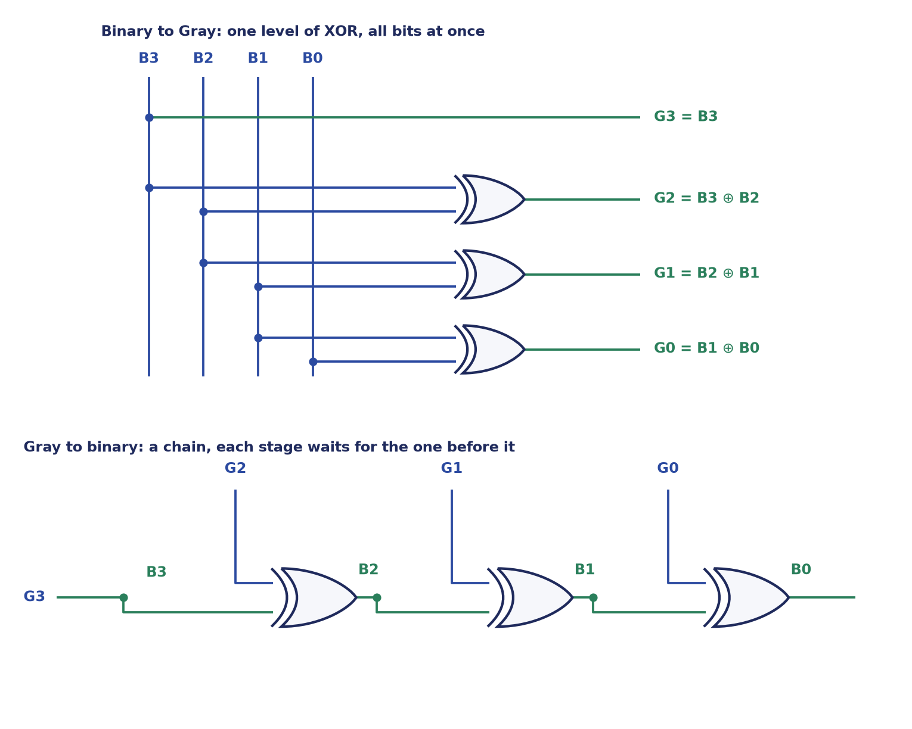

Chapter 4: Adders, Subtractors and Code Converters¶
Designing the arithmetic and code-conversion circuits of a computer, one truth table at a time
Nobody builds a processor one gate at a time, any more than an architect specifies individual bricks. Somewhere between the logic gates of the first chapters and the complete machines of the later ones there is a layer of standard components: small circuits with a well-known function that appear again and again, in every computer, and that designers refer to by name. This chapter opens that layer with the components that do arithmetic and translate between codes: the half adder and the full adder, the full subtractor, the multi-bit parallel adder, the combined adder-subtractor, the comparator and the code converters. Each is a combinational circuit, so its outputs depend only on its present inputs and it has no memory.
The most useful thing to take from the chapter is not any single circuit but the way each one is found. Every circuit here is derived from a statement of what it must do, a truth table, a simplification on a Karnaugh map and a drawing, following the same five steps. Once you have seen the half adder fall out of a four-row table, and the full adder out of an eight-row table, the adder-subtractor, the comparator and the Excess-3 converter stop being things to memorise and become things you could have invented. A second thread runs through the chapter: addition is the most important operation a computer performs, because subtraction, comparison, increment and decrement can all be done with the same adder. A single, carefully built adder is therefore the heart of the arithmetic unit.
The chapter ends with the code converters. A computer holds information in several binary codes, and moving data from one code to another is purely a matter of designing a combinational circuit whose truth table is the code table. The BCD-to-Excess-3 converter shows the full design method with don't-care conditions, and the binary-to-Gray and Gray-to-binary converters show that two circuits that look like mirror images can have very different speeds.
What you will learn
- Apply the five-step combinational design procedure to derive a circuit from a verbal specification.
- Derive the half adder, full adder and full subtractor from their truth tables, and build a full adder from two half adders and an OR gate.
- Chain full adders into a ripple-carry parallel adder, estimate its gate count and delay, and explain how carry look-ahead removes the carry chain.
- Use XOR gates and a mode input \(M\) to turn the parallel adder into an adder-subtractor, and detect overflow correctly for signed numbers.
- Design small comparators and detectors, and the BCD-to-Excess-3 and binary/Gray code converters, from their truth tables.
4.1 The combinational design procedure¶
A combinational circuit is a network of logic gates whose outputs at any instant depend only on the present combination of its inputs. It has no stored state and no clock: apply the same inputs and you always get the same outputs. It is described completely by a truth table with \(2^n\) rows for \(n\) inputs. Every component in this chapter and the next is combinational. The registers and memories of Chapter 6 are the first sequential components of Unit 2, because their outputs also depend on what they hold.
Chapters 1 and 2 introduced the method used to design such a circuit, and we apply it without change here. It has five steps.
- State the problem and count the input and output variables.
- Assign symbols and build the truth table relating the outputs to the inputs.
- Simplify each output, by Boolean algebra or on a Karnaugh map (Chapter 2), to a minimal expression.
- Draw the logic diagram from the simplified expressions.
- Verify the diagram against the truth table.
Think of the five steps as a recipe that turns an English description such as "light the alarm when any two of three sensors agree" into hardware. The truth table is the honest, complete specification, and it can never lie. Simplification is only cost-cutting: fewer gates, less power, less delay. Everything else in this chapter is this recipe applied to a new problem.
The truth table also gives the cleanest way to check a design. Whenever a circuit is drawn, the last step is to read two or three rows of the truth table through the diagram, and to look in particular at the rows where the answer is easy to get wrong. Most marks lost on arithmetic circuits are lost by dropping a carry or a complement, not by faulty algebra, so we will keep returning to explicit worked columns.
4.2 The half adder¶
The simplest arithmetic problem is to add two single bits \(A\) and \(B\). The result needs two bits: a sum \(S\) in the same column and a carry \(C\) into the next column. There are two inputs and two outputs, so step 2 of the procedure gives a four-row truth table.
| \(A\) | \(B\) | Carry \(C\) | Sum \(S\) |
|---|---|---|---|
| 0 | 0 | 0 | 0 |
| 0 | 1 | 0 | 1 |
| 1 | 0 | 0 | 1 |
| 1 | 1 | 1 | 0 |
Table 4.1. Truth table of the half adder: \(0+0=0\), \(0+1=1\), \(1+1=10\) (two).
Read the Sum column: 0, 1, 1, 0. It is 1 precisely when the two inputs differ, which is the definition of the exclusive-OR. The Carry column is 1 only when both inputs are 1, which is the definition of AND. The half adder is therefore hardly a design at all; it is two gates you already knew, recognised in a truth table.
This is why XOR is sometimes called the "modulo-2 sum": it adds two bits and discards the carry. The circuit is one XOR gate and one AND gate fed from the same two inputs (Figure 4.1). You have used a half adder since primary school: adding the units column of \(7+5\) you write 2 and carry 1. In binary the single-column facts are smaller, \(1+1\) is "write 0, carry 1", but the idea is identical.

The circuit is called a half adder because it has nowhere to accept a carry coming in from the column to its right. Adding multi-bit numbers needs three inputs in every column but the first: the two operand bits and the incoming carry. A half adder can therefore only ever serve the least-significant column.
4.3 The full adder¶
A full adder adds three bits: the operand bits \(A\) and \(B\) and an incoming carry \(C_{in}\) (some books call it \(Z\)). It produces a sum \(S\) and an outgoing carry \(C_{out}\). Because the largest possible result is \(1+1+1 = 3 = (11)_2\), two output bits are always enough. With three inputs the truth table has eight rows.
| \(A\) | \(B\) | \(C_{in}\) | \(C_{out}\) | \(S\) |
|---|---|---|---|---|
| 0 | 0 | 0 | 0 | 0 |
| 0 | 0 | 1 | 0 | 1 |
| 0 | 1 | 0 | 0 | 1 |
| 0 | 1 | 1 | 1 | 0 |
| 1 | 0 | 0 | 0 | 1 |
| 1 | 0 | 1 | 1 | 0 |
| 1 | 1 | 0 | 1 | 0 |
| 1 | 1 | 1 | 1 | 1 |
Table 4.2. Truth table of the full adder.
In minterm notation \(S = \sum m(1,2,4,7)\) and \(C_{out} = \sum m(3,5,6,7)\). Plot both outputs on three-variable Karnaugh maps, with \(A\) down the side and \(BC_{in}\) across in Gray order.
| \(S\) | \(BC_{in}=00\) | \(01\) | \(11\) | \(10\) |
|---|---|---|---|---|
| \(A=0\) | 0 | 1 | 0 | 1 |
| \(A=1\) | 1 | 0 | 1 | 0 |
| \(C_{out}\) | \(BC_{in}=00\) | \(01\) | \(11\) | \(10\) |
|---|---|---|---|---|
| \(A=0\) | 0 | 0 | 1 | 0 |
| \(A=1\) | 0 | 1 | 1 | 1 |
Table 4.3. Karnaugh maps of the full adder: the Sum map is a chequerboard, the Carry map groups into three pairs.
The Sum map is a chequerboard. No two 1-cells are adjacent, so nothing can be grouped and the output stays as four minterms, which is exactly the three-input XOR:
The Carry map groups into three pairs: the cells \(m_3, m_7\) give \(BC_{in}\), the cells \(m_5, m_7\) give \(AC_{in}\), and the cells \(m_6, m_7\) give \(AB\). Hence
The two forms of \(C_{out}\) are equal, and the second is the one that matters for hardware, as we shall see in a moment.
Sum is parity, carry is majority
The Sum output asks "is the number of 1s among the inputs odd?" Flipping any single input flips the answer, so no two adjacent cells on the map ever agree, and nothing groups. That is the signature of the XOR (parity) function. The Carry output asks "are at least two of the inputs 1?", a majority vote, which is smooth on the map and groups into three pairs. Hold on to that pair of ideas and the whole full adder is memorised.
A full adder from two half adders¶
Because \(S = (A \oplus B) \oplus C_{in}\) and \(C_{out} = AB + (A \oplus B)C_{in}\), a full adder is exactly two half adders and one OR gate (Figure 4.2). The first half adder adds \(A\) and \(B\) and gives \(A \oplus B\) and \(AB\). The second adds that sum to \(C_{in}\) and gives the final sum and the partial carry \((A \oplus B)C_{in}\). The two partial carries are then merged by the OR gate.

Figure 4.3 shows the same full adder at gate level. The first XOR produces \(A \oplus B\) and that signal is used twice, once as an input to the second XOR that makes the sum and once as an input to the AND gate that makes the second partial carry. The other AND gate makes \(AB\).

The equality of the two carry expressions is worth proving once, because it shows why the OR gate is enough. Starting from the half-adder form and expanding the XOR,
Now add the term \(ABC_{in}\), which changes nothing because \(AB + ABC_{in} = AB\) by absorption:
and, grouping the two terms that contain \(BC_{in}\) and the two that contain \(AC_{in}\),
Two half adders alone are not a full adder
The OR gate is the missing piece that merges the two partial carries. A half adder produces a carry only when both its inputs are 1, but a full adder must also carry when the incoming carry combines with just one operand bit; that case is exactly what the second half adder's carry and the OR gate capture. Drop the OR gate and the circuit under-counts carries. The reverse error is also worth knowing: the two partial carries can never both be 1 at once (if \(A = B = 1\) then \(A \oplus B = 0\)), which is why a cheap OR gate, not another adder, is enough to combine them.
Example 4.1: Checking a full adder column by column
Problem. Use the full-adder equations to find \(S\) and \(C_{out}\) for (a) \(A=B=C_{in}=1\) and (b) \(A = 1\), \(B = 0\), \(C_{in} = 1\), the middle column of the sum \(011 + 001\) computed with a carry arriving into that column. Check each against ordinary binary addition.
Solution. (a) \(S = 1 \oplus 1 \oplus 1 = (1\oplus1)\oplus 1 = 0 \oplus 1 = 1\). \(C_{out} = AB + (A\oplus B)C_{in} = 1 + 0\cdot 1 = 1\). Binary check: \(1+1+1 = (11)_2\), a carry of 1 and a sum bit of 1. They match.
(b) \(S = 1 \oplus 0 \oplus 1 = 1 \oplus 1 = 0\). \(C_{out} = 0 + 1\cdot(1 \oplus 0) = 1\). Binary check: \(1+0+1 = (10)_2\), so the sum bit is 0 and the carry is 1. They match.
Answer. (a) \(S=1\), \(C_{out}=1\); (b) \(S=0\), \(C_{out}=1\).
Example 4.2: How many gates, and how long does the carry take?
Problem. A full adder is built from two half adders and an OR gate. How many gates does a 4-bit ripple adder contain, and what is its worst-case carry delay if each stage passes the carry on after 2 gate delays?
Solution. A half adder is 1 XOR and 1 AND, which is 2 gates. A full adder is two half adders and an OR: \(2 \times 2 + 1 = 5\) gates. A 4-bit adder is four full adders: \(4 \times 5 = 20\) gates. In the worst case the carry must pass through every stage in turn, and each stage costs 2 gate delays, so the carry takes \(4 \times 2 = 8\) gate delays.
Answer. 20 gates and about 8 gate delays, and the delay grows linearly with the number of bits.
4.4 The full subtractor¶
Subtraction can be done directly, column by column, in the same way that addition is. A full subtractor computes \(A - B - B_{in}\), where \(B_{in}\) is the borrow that the previous (less significant) column had to take. It produces a difference \(D\) and a borrow out \(B_{out}\) that is passed to the next column. The truth table lists the arithmetic value for each row, which makes the borrow easy to see: the borrow is 1 exactly when the true result is negative.
| \(A\) | \(B\) | \(B_{in}\) | \(A-B-B_{in}\) | \(D\) | \(B_{out}\) |
|---|---|---|---|---|---|
| 0 | 0 | 0 | 0 | 0 | 0 |
| 0 | 0 | 1 | \(-1\) | 1 | 1 |
| 0 | 1 | 0 | \(-1\) | 1 | 1 |
| 0 | 1 | 1 | \(-2\) | 0 | 1 |
| 1 | 0 | 0 | 1 | 1 | 0 |
| 1 | 0 | 1 | 0 | 0 | 0 |
| 1 | 1 | 0 | 0 | 0 | 0 |
| 1 | 1 | 1 | \(-1\) | 1 | 1 |
Table 4.4. Truth table of the full subtractor.
In minterm form \(D = \sum m(1,2,4,7)\) and \(B_{out} = \sum m(1,2,3,7)\). The difference column is the same pattern as the adder's Sum column, so again nothing groups and \(D\) is a three-input XOR. The borrow map groups into three pairs, \(m_{2},m_{3}\) giving \(A'B\), \(m_{1},m_{3}\) giving \(A'B_{in}\), and \(m_{3},m_{7}\) giving \(BB_{in}\).
Compare these with the full adder, \(S = A \oplus B \oplus C_{in}\) and \(C_{out} = AB + AC_{in} + BC_{in}\). The difference is the adder's sum, bit for bit, and the borrow is the carry with \(A\) replaced by \(A'\). That single substitution, shown in Figure 4.4 as one inverter on the \(A\) input of the borrow network, is the circuit-level reason that one piece of hardware can be made to add and subtract. Section 4.6 turns the idea into a practical circuit, using complements rather than a separate subtractor.

If the borrow-in is absent (the least-significant column) the circuit reduces to a half subtractor, with \(D = A \oplus B\) and \(B_{out} = A'B\). This is the subtraction counterpart of the half adder, and, like it, it is the first stage in a chain.
Example 4.3: One row of the subtractor
Problem. Compute \(A - B - B_{in}\) for \(A = 0\), \(B = 1\), \(B_{in} = 1\) using the equations of the full subtractor, and check the answer arithmetically.
Solution. \(D = 0 \oplus 1 \oplus 1 = 0\). \(B_{out} = A'B + A'B_{in} + BB_{in} = 1\cdot 1 + 1 \cdot 1 + 1\cdot 1 = 1\). Arithmetic: \(0 - 1 - 1 = -2\). Writing \(-2\) as "borrow 1 from the next column, then \(2 - 2 = 0\)" gives a difference bit of 0 and a borrow of 1.
Answer. \(D = 0\), \(B_{out} = 1\).
4.5 The binary parallel adder¶
A single full adder adds one column. To add two \(n\)-bit numbers we place \(n\) full adders side by side and connect the carry-out of each stage to the carry-in of the next. The first carry-in is 0 (or, in the arithmetic of the next sections, a control signal). This chain is the binary parallel adder, also called the ripple-carry adder. Figure 4.5 shows the 4-bit case, with the least significant stage on the right as the numbers are written.

The name "parallel" is a little misleading, because all the operand bits are presented at once yet the answer can still be slow. The reason is that the carry is a chain of dependencies. Bit 3's sum cannot be correct until bit 2's carry has arrived, which waited on bit 1's, which waited on bit 0's. Even though the operand bits all arrive together, information must travel from the least-significant to the most-significant end. Adding 9999 + 1 by hand shows the same effect: you cannot write the leading digit until every carry has rippled all the way up.
The carry-propagation delay therefore grows linearly with the number of bits. With the estimate of Example 4.2, each stage costs 2 gate delays, so the worst-case carry delay of an \(n\)-bit ripple adder is \(2n\) gate delays.
Example 4.4: Scaling the ripple adder to a 64-bit word
Problem. Estimate the worst-case carry delay of a 16-bit and a 64-bit ripple-carry adder (2 gate delays per stage). If a gate delay is 50 ps, what clock frequency would a 64-bit ripple adder limit a processor to?
Solution. 16-bit: \(16 \times 2 = 32\) gate delays. 64-bit: \(64 \times 2 = 128\) gate delays, or \(128 \times 50\ \text{ps} = 6.4\ \text{ns}\) for a single addition. A clock period cannot be shorter than that, so the clock frequency is at most \(1/6.4\ \text{ns} \approx 156\) MHz, below 160 MHz.
Answer. 32 and 128 gate delays. The 64-bit ripple adder caps the clock at roughly 156 MHz, which is far too slow, and this is why real arithmetic units use carry look-ahead.
Example 4.5: A faulty carry
Problem. In a 4-bit ripple-carry adder the carry out of stage \(FA_1\) (the carry \(C_2\)) is stuck at 0 because of a fault. Predict the result of adding \(A = 0111\) and \(B = 0001\) with \(C_0 = 0\) and say which sum bits are wrong. (The correct sum is \(1000\).)
Solution. Work stage by stage, starting at the right. \(FA_0\): \(1+1+0\) gives \(S_0 = 0\), \(C_1 = 1\). \(FA_1\): \(1+0+1\) should give \(S_1 = 0\) and \(C_2 = 1\); the sum bit is unaffected, but the faulty carry is forced to 0. \(FA_2\): \(1+0+C_2\) with \(C_2 = 0\) gives \(S_2 = 1\) and \(C_3 = 0\). \(FA_3\): \(0+0+0\) gives \(S_3 = 0\).
The faulty result is \(S_3S_2S_1S_0 = 0100\) (that is, 4) instead of \(1000\) (that is, 8). Bits \(S_2\) and \(S_3\) are wrong, and bits \(S_1\) and \(S_0\) are right. The lost carry never propagated upward.
Answer. \(0100\); \(S_3\) and \(S_2\) are wrong.
Carry look-ahead¶
A faster adder computes every carry directly from the inputs instead of waiting for it to ripple. For each bit position define two signals:
- the generate signal \(G_i = A_i B_i\): this stage produces a carry by itself, whatever arrives from the right;
- the propagate signal \(P_i = A_i \oplus B_i\): this stage passes an incoming carry along.
Then the carry out of stage \(i\) is \(C_{i+1} = G_i + P_i C_i\), and the sum is \(S_i = P_i \oplus C_i\). Substituting repeatedly removes the dependence on the intermediate carries, so that every carry is a function of \(C_0\) and the operand bits only. For four bits:
All four carries are two-level AND-OR expressions, so they are formed in about two gate delays after \(G\) and \(P\), in place of \(n\) delays in series. The price is hardware: the expression for the high-order carries needs AND gates with many inputs and OR gates with many inputs. This high fan-in is why a flat look-ahead network spanning all 64 bits of a word is impractical, and why real adders use blocks, for instance 4-bit look-ahead units whose own group-generate and group-propagate signals feed a second level of look-ahead. The result is delay close to logarithmic in \(n\) with manageable gate sizes.
Example 4.6: Look-ahead carries for 0110 + 0011
Problem. Use the generate and propagate signals to find all carries and the sum of \(A = 0110\) and \(B = 0011\) with \(C_0 = 0\).
Solution. Bit by bit, writing the bits from \(A_3\) down to \(A_0\): \(G = A \cdot B = 0010\), so \(G_1 = 1\) and the other \(G_i = 0\). \(P = A \oplus B = 0101\), so \(P_0 = P_2 = 1\) and \(P_1 = P_3 = 0\).
Now the carries: \(C_1 = G_0 + P_0 C_0 = 0 + 1\cdot 0 = 0\). \(C_2 = G_1 + P_1 C_1 = 1 + 0 = 1\). \(C_3 = G_2 + P_2 C_2 = 0 + 1\cdot 1 = 1\). \(C_4 = G_3 + P_3 C_3 = 0 + 0 = 0\).
The sum bits are \(S_i = P_i \oplus C_i\) with \(C_0 \ldots C_3 = 0,0,1,1\): \(S_0 = 1 \oplus 0 = 1\), \(S_1 = 0 \oplus 0 = 0\), \(S_2 = 1 \oplus 1 = 0\), \(S_3 = 0 \oplus 1 = 1\). So \(S = 1001 = 9\), which equals \(6 + 3\).
Answer. \(S = 1001\) (decimal 9), \(C_4 = 0\).
4.6 The adder-subtractor¶
Adding is clearly worth building, but subtraction is just as common, and building a separate subtractor would double the hardware. We use the idea of Chapter 7 instead: in 2's-complement arithmetic, subtracting a number is the same as adding its complement.
The 1's complement \(B'\) is obtained by inverting every bit of \(B\), and the extra \(+1\) can be supplied through the otherwise unused carry-in \(C_0\) of the parallel adder. So the same adder, with its second operand optionally inverted and its carry-in set to match, does both jobs. The optional inversion is the job of an XOR gate. Recall that \(B_i \oplus 0 = B_i\) (pass through, unchanged) and \(B_i \oplus 1 = B_i'\) (invert). One XOR gate per bit is therefore a controlled inverter, and a single control line \(M\) drives all the XOR gates and also the first carry-in \(C_0\) (Figure 4.6).

The two settings of the mode input give two operations.
| \(M\) | \(B_i \oplus M\) | \(C_0\) | Operation performed |
|---|---|---|---|
| 0 | \(B_i\) | 0 | \(A + B\) (addition) |
| 1 | \(B_i'\) | 1 | \(A + B' + 1 = A - B\) (subtraction) |
Table 4.5. The mode input \(M\) of the adder-subtractor.
One control line, two operations and almost no extra hardware: four XOR gates have turned the adder into a subtractor. A common error is to wire the XOR gates but tie \(C_0\) to 0; that circuit computes \(A + B'\), which is \(A - B - 1\), not \(A - B\). The \(+1\) is essential. The reason subtraction can reuse the adder at all is the same as the reason an odometer can run backwards. On a wrap-around dial, subtracting a number equals adding the distance the other way round, and in binary that distance is the 2's complement.
Example 4.7: Add and subtract on a 4-bit adder-subtractor
Problem. With \(A = 0110\) (6) and \(B = 0011\) (3), show what the circuit produces for \(M = 0\) and for \(M = 1\). Then compute \(9 - 5\) with \(M = 1\).
Solution. \(M = 0\) (add). The XOR gates pass \(B\) unchanged and \(C_0 = 0\):
0110 (A = 6)
+ 0011 (B = 3) C0 = 0
= 1001 (9) C4 = 0
\(M = 1\) (subtract). The XOR gates give \(B' = 1100\) and \(C_0 = 1\):
0110 (A = 6)
+ 1100 (B' = 1100) C0 = 1
= 0011 (3) C4 = 1, discarded
The carry-out \(C_4 = 1\) is discarded in 2's-complement subtraction, and \(0011 = 3 = 6 - 3\).
For \(9 - 5\): \(A = 1001\), \(B = 0101\), \(B' = 1010\), \(C_0 = 1\). Then \(1001 + 1010 + 1 = 1\,0100\); the end carry is discarded and the result is \(0100 = 4\).
Answer. \(M=0\): \(1001\) (9). \(M=1\): \(0011\) (3). \(9 - 5 = 0100 = 4\).
The carry out of the top stage, \(C_4\), deserves a remark. For addition it is the carry out of the most-significant column, and for subtraction it tells you something different: if the numbers are unsigned, \(C_4 = 1\) in a subtraction means that no borrow was needed, so \(A \ge B\), while \(C_4 = 0\) means that \(A < B\) and the result \(A - B\) is negative, appearing in its 2's-complement form. For instance \(3 - 6\) on four bits gives \(0011 + 1001 + 1 = 1101\) with \(C_4 = 0\): the borrow is signalled, and \(1101\) is the 2's-complement form of \(-3\).
4.7 Overflow¶
Overflow is what happens when the true result of an arithmetic operation does not fit in the number of bits available. A 4-bit register can only hold the integers \(0\) to \(15\) if it is read as unsigned and \(-8\) to \(+7\) if it is read as signed 2's complement. For \(n\) bits the signed range is \(-2^{n-1}\) to \(+2^{n-1}-1\). The detection rule depends on which of the two readings applies, and confusing them is the commonest mistake in this part of the subject.
Unsigned numbers. The result does not fit exactly when there is a carry out of the most-significant stage, \(C_n = 1\). The carry-out says that the true sum needed one more bit.
Signed 2's-complement numbers. A carry out of the top stage is perfectly normal and means nothing by itself. The real error is a result whose sign is wrong. This can only happen when two operands of the same sign are added: two positives that give a negative, or two negatives that give a positive. Adding operands of opposite signs can never overflow, because the answer is always smaller in magnitude than the larger operand. The hardware test uses the carries into and out of the sign bit:
\(V = 1\) signals overflow: the carry into the sign position and the carry out of it differ. In a 4-bit adder this is \(V = C_4 \oplus C_3\), where \(C_3\) is the carry out of bit 2 into the sign bit. In Figure 4.6 the XOR gate that makes the overflow flag \(V\) is fed by those same two carries.
A carry out is not an overflow
"A carry-out of the top bit means overflow" is true only for unsigned numbers. For signed numbers the flag to read is \(V = C_n \oplus C_{n-1}\). Example 4.7 shows how far apart they can be: the subtraction \(6 - 3\) produced a carry-out of 1, yet the signed answer \(+3\) was perfectly correct and there was no overflow. Which flag you read depends entirely on whether you are treating the bits as signed or unsigned. The hardware is the same either way; the interpretation decides.
Example 4.8: Overflow in signed addition
Problem. Add the signed 4-bit numbers (a) \(+7\) and \(+1\), (b) \(+5\) and \(+4\), (c) \(-5\) and \(-4\), and (d) \(+6\) and \(+5\). Which cases overflow?
Solution. (a) \(0111 + 0001 = 1000\). The carry into the sign bit is \(C_3 = 1\) and the carry out is \(C_4 = 0\), so \(V = 0 \oplus 1 = 1\). Overflow: \(1000\) reads as \(-8\), but \(+8\) exceeds the maximum of \(+7\).
(b) \(0101 + 0100 = 1001\). \(C_3 = 1\), \(C_4 = 0\), \(V = 1\). Overflow: the pattern \(1001\) reads as \(-7\), a wrong answer for \(+9\) (two positives gave a negative).
(c) \(-5 = 1011\) and \(-4 = 1100\). \(1011 + 1100 = 1\,0111\). \(C_3 = 0\) (bit 2 gives \(0+1+0\) with no carry) and \(C_4 = 1\), so \(V = 1 \oplus 0 = 1\). Overflow: the result \(0111\) reads as \(+7\), but the true sum \(-9\) is below the minimum of \(-8\) (two negatives gave a positive).
(d) \(0110 + 0101 = 1011\). \(C_3 = 1\), \(C_4 = 0\), \(V = 1\). Overflow: \(1011\) reads as \(-5\), while \(6+5 = 11\) exceeds \(+7\).
Answer. All four overflow. In each case the two operands had the same sign and the result had the opposite sign.
Example 4.9: The same bits, two different verdicts
Problem. A 4-bit adder computes \(1001 + 1000\). Interpret the result (a) as unsigned addition and (b) as signed 2's-complement addition, and state which flag, carry-out or overflow, is raised in each view.
Solution. Add the bits once: \(1001 + 1000 = 1\,0001\), a 4-bit result \(0001\) with carry-out \(C_4 = 1\). The carry into the sign bit is \(C_3 = 0\), so \(V = C_4 \oplus C_3 = 1 \oplus 0 = 1\).
(a) Unsigned: \(9 + 8 = 17\), which needs five bits, so the true answer does not fit. The carry-out \(C_4 = 1\) is the correct out-of-range flag, and \(17 - 16 = 1\) is the remainder shown.
(b) Signed: \(1001 = -7\) and \(1000 = -8\), so the true sum is \(-15\), below the minimum \(-8\). The stored result \(0001 = +1\) has the wrong sign, and \(V = 1\) flags the overflow.
Answer. The identical bit pattern is out of range in both readings, but a different flag reports it: carry-out for unsigned and \(V\) for signed. The interpretation, not the hardware, decides which flag counts.
4.8 Arithmetic microoperations¶
A microoperation is an elementary operation performed on data stored in registers, completed in one clock period. The arithmetic microoperations of a processor are the additions, subtractions and increments that the datapath performs, and the circuits of this chapter are the hardware that carries them out. Register transfer notation (the arrow \(\leftarrow\) means "is replaced by") is used from now on. Table 4.6 lists the basic ones.
| Microoperation | Meaning | Hardware |
|---|---|---|
R3 ← R1 + R2 |
Add: sum of two registers | parallel adder |
R3 ← R1 + R2'+ 1 |
Subtract: add the 2's complement of R2 |
adder with complemented input and carry-in 1 |
R2 ← R2' |
1's complement (bitwise NOT) | inverters or the XOR gates with \(M=1\) |
R2 ← R2' + 1 |
2's complement (negate) | complement, then add one |
R1 ← R1 + 1 |
Increment: add one (an up-counter) | adder with \(B = 0\) and carry-in 1, or a counter |
R1 ← R1 - 1 |
Decrement: subtract one (a down-counter) | adder with \(B = 1\ldots1\) (that is, \(-1\)) or a counter |
R3 ← R1 + R2 + C |
Add with carry (multi-word addition) | adder whose carry-in is the saved carry bit |
Table 4.6. Basic arithmetic microoperations in register-transfer notation.
Every one of these is carried out by the same adder with different control inputs, which is why the adder-subtractor is the core of the arithmetic unit. Add with carry is worth singling out: when numbers longer than the register are added in pieces, the carry out of the first word is saved and enters the carry-in of the adder for the next word, so the chain of full adders is extended, in time rather than in space, across several words. The logic operations (AND, OR, XOR and complement) and the shift operations are performed by other circuits, which later chapters combine with the adder.
4.9 Comparators and detectors¶
The same design recipe produces circuits that answer yes-or-no questions about their inputs. We look at two: a detector, which recognises a set of input values, and a comparator, which compares two numbers.
A 3-bit prime-number detector¶
Specification. The three inputs \(ABC\) represent an unsigned number from 0 to 7, and the single output \(F\) must be 1 when the number is prime.
The primes below 8 are 2, 3, 5 and 7 (0 and 1 are not prime, and 4 and 6 are composite), so \(F = \sum m(2,3,5,7)\). On the map the cells \(m_2, m_3\) pair into \(A'B\) and the cells \(m_5, m_7\) pair into \(AC\). The pair \(m_3, m_7\) also forms a prime implicant, \(BC\), but both of its cells are already covered, so it is not essential and is discarded.
The circuit is two AND gates and one OR gate, with an inverter for \(A'\). The check of step 5 confirms it: for \(ABC = 011\) (three), \(A'B = 1\) and \(F = 1\); for \(ABC = 110\) (six), \(A'B = 0\) and \(AC = 0\), so \(F = 0\).
Example 4.10: A BCD prime detector using don't-cares
Problem. Design a detector whose four inputs \(ABCD\) are a BCD digit and whose output is 1 when the digit is prime. The codes \(1010\) to \(1111\) never occur.
Solution. The primes among the digits 0 to 9 are 2, 3, 5, 7, so \(F = \sum m(2,3,5,7) + d(10,11,12,13,14,15)\). Use the don't-cares wherever they enlarge a group. The four cells \(m_2, m_3, m_{10}, m_{11}\) form the group \(B'C\) (the cells 10 and 11 are don't-cares). The four cells \(m_5, m_7, m_{13}, m_{15}\) form the group \(BD\) (13 and 15 are don't-cares). Together they cover all four primes and no composite digit: \(B'C\) contains only 2, 3 and the unused codes 10, 11; \(BD\) contains only 5, 7 and the unused 13, 15.
Check: for 9 (1001), \(B = 0\) and \(C = 0\) so \(B'C = 0\), and \(BD = 0\), giving \(F = 0\) as required.
Answer. \(F = B'C + BD\), which is two AND gates, an OR gate and one inverter.
A 2-bit magnitude comparator¶
Specification. Compare two 2-bit unsigned numbers \(A = A_1A_0\) and \(B = B_1B_0\) and produce three mutually exclusive outputs: \(G\) for \(A > B\), \(E\) for \(A = B\) and \(L\) for \(A < B\).
A 16-row truth table is possible, but a better way is to reason from the meaning of the comparison. Define the bit-equality signals \(x_i = A_i \odot B_i = A_iB_i + A_i'B_i'\) (an XNOR), which is 1 when bit \(i\) of the two numbers matches. The numbers are equal only if both bits match:
\(A\) is greater than \(B\) in exactly two mutually exclusive situations. Either the most-significant bits already decide it (\(A_1 = 1\) and \(B_1 = 0\)), or the most-significant bits match and the least-significant bit decides it (\(x_1 = 1\), \(A_0 = 1\), \(B_0 = 0\)). Therefore
By symmetry, swapping the roles of \(A\) and \(B\),
Exactly one of the three outputs is 1 at any time, so \(E\) can be formed as \(E = (G + L)'\) with a single NOR gate, saving the two XNORs. The same reasoning scales to any word length: compare from the most-significant bit downwards, and the first position where the bits differ decides the result.
Example 4.11: Verifying the comparator
Problem. Check the comparator equations on the input pairs \(A = 11, B = 10\); \(A = 01, B = 10\); and \(A = 10, B = 10\).
Solution. \(A = 11\) (\(3\)), \(B = 10\) (\(2\)): \(A_1 = B_1 = 1\) so \(x_1 = 1\). The term \(x_1A_0B_0' = 1\cdot 1\cdot 1 = 1\), so \(G = 1\); and \(L = 0\), \(E = 0\) since \(x_0 = 0\). Correct: \(3 > 2\).
\(A = 01\) (\(1\)), \(B = 10\) (\(2\)): \(A_1 = 0\) and \(B_1 = 1\) so \(A_1'B_1 = 1\) and \(L = 1\), with \(G = E = 0\). Correct: \(1 < 2\).
\(A = 10\), \(B = 10\): \(x_1 = 1\) and \(x_0 = 1\), so \(E = 1\) and \(G = L = 0\). Correct: equal.
Answer. The three outputs agree with arithmetic in each case.
4.10 Code converters¶
Computers and their peripherals use several binary codes for the same information, and a code converter is a combinational circuit whose input is a word in one code and whose output is the corresponding word in another. Its truth table is simply the code table itself. Because the circuits are described by tables, they are an ideal application of the design procedure; and, because some input combinations never occur, they are also an ideal application of don't-care conditions.
BCD to Excess-3¶
In BCD (binary-coded decimal) each decimal digit is written as its four-bit binary value, so 0 to 9 use the codes \(0000\) to \(1001\) and the six codes \(1010\) to \(1111\) never occur. The Excess-3 code stores the digit plus three: the code for decimal \(d\) is the binary value of \(d + 3\). It is a self-complementing code, in that complementing the four bits gives the code for \(9 - d\), and this made it useful in early decimal arithmetic.
Step 1 and 2. The converter has four inputs \(ABCD\) (\(A\) is the most significant) and four outputs \(wxyz\) (\(w\) is the most significant). The outputs for the six unused codes are don't-cares, because those inputs never occur.
| Decimal | \(A\) | \(B\) | \(C\) | \(D\) | \(w\) | \(x\) | \(y\) | \(z\) |
|---|---|---|---|---|---|---|---|---|
| 0 | 0 | 0 | 0 | 0 | 0 | 0 | 1 | 1 |
| 1 | 0 | 0 | 0 | 1 | 0 | 1 | 0 | 0 |
| 2 | 0 | 0 | 1 | 0 | 0 | 1 | 0 | 1 |
| 3 | 0 | 0 | 1 | 1 | 0 | 1 | 1 | 0 |
| 4 | 0 | 1 | 0 | 0 | 0 | 1 | 1 | 1 |
| 5 | 0 | 1 | 0 | 1 | 1 | 0 | 0 | 0 |
| 6 | 0 | 1 | 1 | 0 | 1 | 0 | 0 | 1 |
| 7 | 0 | 1 | 1 | 1 | 1 | 0 | 1 | 0 |
| 8 | 1 | 0 | 0 | 0 | 1 | 0 | 1 | 1 |
| 9 | 1 | 0 | 0 | 1 | 1 | 1 | 0 | 0 |
| 10-15 | – | – | – | – | X | X | X | X |
Table 4.7. BCD to Excess-3: the Excess-3 code is BCD plus 3.
In minterm form, with the don't-cares \(d(10,11,12,13,14,15)\) common to all four outputs: \(w = \sum m(5,6,7,8,9)\), \(x = \sum m(1,2,3,4,9)\), \(y = \sum m(0,3,4,7,8)\) and \(z = \sum m(0,2,4,6,8)\).
Step 3. Figure 4.7 shows the four maps. The don't-cares are used freely as 1s wherever they enlarge a group, which is legitimate because the corresponding input codes never occur and the incorrect outputs they might produce are therefore harmless.

For \(w\) the octet \(m_8\) to \(m_{15}\) (the whole \(A = 1\) half, using the six don't-cares) gives \(A\); the quad \(m_6, m_7, m_{14}, m_{15}\) gives \(BC\); and the quad \(m_5, m_7, m_{13}, m_{15}\) gives \(BD\). For \(x\) the groups are \(B'C\) (\(m_2, m_3, m_{10}, m_{11}\)), \(B'D\) (\(m_1, m_3, m_9, m_{11}\)) and the pair \(m_4, m_{12}\), which is \(BC'D'\). For \(y\) the column \(CD\) (\(m_3,m_7,m_{11},m_{15}\)) and the column \(C'D'\) (\(m_0,m_4,m_8,m_{12}\)). For \(z\) the eight even-numbered cells all have \(D = 0\). The results are
Step 4: counting gates. The sub-expression \(C + D\) appears in both \(w\) and \(x\) and need only be built once. With it shared, the circuit has one OR gate for \(C + D\); for \(w\) one AND (\(B(C+D)\)) and one OR; for \(x\) one AND (\(B'(C+D)\)), one 3-input AND (\(BC'D'\)) and one OR; for \(y\) one XNOR; and for \(z\) one inverter (the same \(D'\) also feeds the 3-input AND). That is seven gates plus the inverters for \(B'\), \(C'\) and \(D'\), which compares well with four large two-level AND-OR networks if the canonical forms had been used. There is a still cheaper form. Since \(C'D' = (C + D)'\), we have \(BC'D' = B(C+D)'\), and
which replaces three gates by a single XOR. With this, the whole converter is an OR gate, an AND and an OR for \(w\), an XOR for \(x\), an XNOR for \(y\) and an inverter for \(z\): five gates and one inverter. This kind of sharing is the usual last step in a design, after the maps have done their work.
Step 5: verify. Take the decimal digit 7, \(ABCD = 0111\). Then \(w = A + B(C+D) = 0 + 1\cdot 1 = 1\); \(x = B \oplus (C+D) = 1 \oplus 1 = 0\); \(y = (C \oplus D)' = (1\oplus 1)' = 1\); and \(z = D' = 0\). The output \(wxyz = 1010\) is the binary value of \(7 + 3 = 10\), as it should be.
Example 4.12: Excess-3 for the digit 9 and the digit 0
Problem. Use the simplified equations to find the Excess-3 code of decimal 9 and decimal 0.
Solution. Digit 9, \(ABCD = 1001\). \(w = A + B(C+D) = 1\). \(x = B \oplus (C + D) = 0 \oplus 1 = 1\). \(y = (C\oplus D)' = (0 \oplus 1)' = 0\). \(z = D' = 0\). The output is \(1100\), which is \(12 = 9 + 3\).
Digit 0, \(ABCD = 0000\). \(w = 0 + 0 = 0\). \(x = 0 \oplus 0 = 0\). \(y = (0\oplus0)' = 1\). \(z = 1\). The output is \(0011\), which is \(3 = 0 + 3\).
Answer. \(9 \to 1100\) and \(0 \to 0011\).
Binary to Gray and Gray to binary¶
The Gray code is a binary code in which consecutive values differ in exactly one bit. It is used wherever a value is read while it is changing, such as a shaft-position encoder, because a reader that catches the code mid-transition can only be wrong by one step. It is the same ordering used for the rows and columns of a Karnaugh map, and for the same reason. Converting between ordinary binary \(B_3B_2B_1B_0\) and Gray \(G_3G_2G_1G_0\) is a matter of XOR gates.
| Decimal | Binary \(B_3B_2B_1B_0\) | Gray \(G_3G_2G_1G_0\) |
|---|---|---|
| 0 | 0000 | 0000 |
| 1 | 0001 | 0001 |
| 2 | 0010 | 0011 |
| 3 | 0011 | 0010 |
| 4 | 0100 | 0110 |
| 5 | 0101 | 0111 |
| 6 | 0110 | 0101 |
| 7 | 0111 | 0100 |
| 8 | 1000 | 1100 |
| 9 | 1001 | 1101 |
| 10 | 1010 | 1111 |
| 11 | 1011 | 1110 |
| 12 | 1100 | 1010 |
| 13 | 1101 | 1011 |
| 14 | 1110 | 1001 |
| 15 | 1111 | 1000 |
Table 4.8. Four-bit binary and Gray codes.
Look at the Gray column in Table 4.8: the codes change in one bit from every row to the next. The rule for binary to Gray is that the most-significant bit is copied, and every other Gray bit is the XOR of the corresponding binary bit with the binary bit to its left:
For Gray to binary the rule runs the other way. The binary bit depends on the binary bit already produced to its left:
Expanded fully, \(B_2 = G_3 \oplus G_2\), \(B_1 = G_3 \oplus G_2 \oplus G_1\) and \(B_0 = G_3 \oplus G_2 \oplus G_1 \oplus G_0\). For an \(n\)-bit word the general expressions are \(G_{n-1} = B_{n-1}\) and \(G_i = B_{i+1} \oplus B_i\) in the one direction, and \(B_{n-1} = G_{n-1}\) and \(B_i = B_{i+1} \oplus G_i = G_{n-1} \oplus \cdots \oplus G_i\) in the other. Both circuits need \(n - 1\) XOR gates (Figure 4.8).

The two circuits have the same gate count but very different speeds. In binary to Gray, every XOR gate sees only input bits, so all outputs are formed together, in one gate delay regardless of \(n\). In Gray to binary each gate needs the output of the gate before it, so the gates form a chain of \(n - 1\) delays unless the expressions are restructured as an XOR tree. It is the same story as the ripple carry: whenever one stage needs the result of the previous stage, the delay grows with the word length.
Example 4.13: Converting with the XOR rules
Problem. Convert binary \(1011\) to Gray code, and Gray \(1110\) back to binary.
Solution. Binary to Gray. \(G_3 = B_3 = 1\). \(G_2 = B_3 \oplus B_2 = 1 \oplus 0 = 1\). \(G_1 = B_2 \oplus B_1 = 0 \oplus 1 = 1\). \(G_0 = B_1 \oplus B_0 = 1 \oplus 1 = 0\). The Gray code is \(1110\) (Table 4.8 agrees: decimal 11).
Gray to binary. \(B_3 = G_3 = 1\). \(B_2 = B_3 \oplus G_2 = 1 \oplus 1 = 0\). \(B_1 = B_2 \oplus G_1 = 0 \oplus 1 = 1\). \(B_0 = B_1 \oplus G_0 = 1 \oplus 0 = 1\). The binary number is \(1011\).
Answer. \(1011 \to 1110\) and \(1110 \to 1011\).
4.11 Summary¶
Key points
- Combinational circuits are designed in five steps: specification, truth table, simplification, logic diagram, verification. Don't-care conditions make the simplification cheaper.
- Half adder: \(S = A \oplus B\), \(C = AB\); it has no carry input. Full adder: \(S = A \oplus B \oplus C_{in}\), \(C_{out} = AB + C_{in}(A \oplus B)\), equal to two half adders and an OR gate. Sum is parity and carry is majority.
- Full subtractor: \(D = A \oplus B \oplus B_{in}\) and \(B_{out} = A'B + A'B_{in} + BB_{in}\), the adder with \(A\) inverted in the carry network.
- An \(n\)-bit ripple-carry adder is \(n\) full adders in a chain; its delay grows linearly with \(n\) (about \(2n\) gate delays). Carry look-ahead computes every carry from \(G_i = A_iB_i\) and \(P_i = A_i \oplus B_i\) using \(C_{i+1} = G_i + P_iC_i\), at the cost of larger gates.
- Adder-subtractor: XOR gates on the \(B\) inputs and the mode line \(M\) also feeding \(C_0\). \(M = 0\) gives \(A + B\) and \(M = 1\) gives \(A + B' + 1 = A - B\).
- Unsigned overflow is the carry-out \(C_n\); signed overflow is \(V = C_n \oplus C_{n-1}\) and can happen only when the operands have the same sign.
- Comparators are built from the bit-equality signals \(x_i = A_i \odot B_i\); decide at the most-significant differing bit.
- Code converters are truth tables: Excess-3 is BCD \(+3\) (\(w = A + B(C+D)\), \(x = B \oplus (C+D)\), \(y = (C \oplus D)'\), \(z = D'\)). Binary to Gray is one XOR level; Gray to binary is a chain of XORs.
| Circuit | Equations | Cost or delay |
|---|---|---|
| Half adder | \(S = A \oplus B\), \(C = AB\) | 2 gates |
| Full adder | \(S = A \oplus B \oplus C_{in}\), \(C_{out} = AB + C_{in}(A \oplus B)\) | 5 gates (2 half adders + OR) |
| Full subtractor | \(D = A \oplus B \oplus B_{in}\), \(B_{out} = A'B + A'B_{in} + BB_{in}\) | like a full adder plus one inverter |
| \(n\)-bit ripple adder | \(C_{i+1} = G_i + P_iC_i\) chained | \(5n\) gates, about \(2n\) gate delays |
| Adder-subtractor | \(B_i \oplus M\), \(C_0 = M\) | \(n\) extra XOR gates |
| Overflow | unsigned: \(C_n\); signed: \(V = C_n \oplus C_{n-1}\) | one XOR gate |
| Binary to Gray | \(G_i = B_{i+1} \oplus B_i\) | \(n-1\) XORs, 1 level |
| Gray to binary | \(B_i = B_{i+1} \oplus G_i\) | \(n-1\) XORs, \(n-1\) levels |
4.12 Exercises¶
Exercise 4.1. Give the Sum and Carry equations of (a) a half adder and (b) a full adder, and explain why the Sum output of the full adder cannot be simplified on a Karnaugh map whereas the Carry output can.
Answer
(a) \(S = A \oplus B\), \(C = AB\). (b) \(S = A \oplus B \oplus C_{in}\) and \(C_{out} = AB + C_{in}(A \oplus B) = AB + AC_{in} + BC_{in}\). The Sum is the odd-parity function: it is 1 when an odd number of inputs are 1, so flipping any single input flips the output and no two adjacent cells of the map are both 1. Nothing can be grouped and Sum stays a three-input XOR. The Carry is a majority function (at least two 1s), so its 1-cells cluster and group into three pairs.
Exercise 4.2. A student writes the full-adder carry as \(C_{out} = AB + BC_{in}\), dropping the term \(AC_{in}\). Give an input combination for which this is wrong, state the correct \(C_{out}\) there, and say which case the missing term covers.
Answer
Take \(A = 1\), \(B = 0\), \(C_{in} = 1\). The correct carry is \(AB + (A \oplus B)C_{in} = 0 + 1\cdot 1 = 1\), because \(1 + 0 + 1 = (10)_2\). The student's expression gives \(AB + BC_{in} = 0 + 0 = 0\), which is wrong. The dropped term \(AC_{in}\) covers the case where \(A\) and \(C_{in}\) are both 1 and \(B\) is 0: a carry must still be generated.
Exercise 4.3. How many gates are there in an 8-bit ripple adder built from full adders of two half adders and an OR? How many are saved if the least-significant stage is a half adder because there is no carry-in?
Answer
A full adder is \(2 \times 2 + 1 = 5\) gates, so 8 stages are \(8 \times 5 = 40\) gates. Replacing the first full adder by a half adder (2 gates) leaves \(2 + 7 \times 5 = 37\) gates, a saving of 3 gates.
Exercise 4.4. A full adder is built so that each stage passes the carry on after 2 gate delays. How long does a 32-bit ripple adder take in the worst case, and how does carry look-ahead change the picture?
Answer
\(32 \times 2 = 64\) gate delays. A look-ahead adder forms each carry directly from the \(G_i\) and \(P_i\) signals as a two-level AND-OR expression, so the delay no longer grows in proportion to \(n\) (a flat look-ahead takes about two gate delays beyond \(G\) and \(P\), and a block look-ahead grows only logarithmically), at the price of larger gates.
Exercise 4.5. Compute \(A - B - B_{in}\) with a full subtractor for \(A = 1\), \(B = 1\), \(B_{in} = 1\) and state \(D\) and \(B_{out}\).
Answer
\(D = 1 \oplus 1 \oplus 1 = 1\). \(B_{out} = A'B + A'B_{in} + BB_{in} = 0 + 0 + 1 = 1\). Arithmetic: \(1 - 1 - 1 = -1\), which is a difference bit of 1 with a borrow of 1.
Exercise 4.6. In the adder-subtractor, what is computed if the XOR gates are present but the carry-in \(C_0\) is tied to 0 when \(M = 1\)? Give a numerical example with \(A = 0101\) and \(B = 0011\).
Answer
The circuit computes \(A + B'\) without the \(+1\), which is \(A - B - 1\). With \(A = 0101\) (5) and \(B = 0011\) (3): \(B' = 1100\) and \(0101 + 1100 = 1\,0001\), giving \(0001 = 1\), whereas the correct \(5 - 3 = 2\) would need the carry-in of 1 (\(0101 + 1100 + 1 = 1\,0010\), giving \(0010 = 2\)).
Exercise 4.7. On a 4-bit adder-subtractor compute \(12 - 7\) and \(3 - 6\) (unsigned operands, \(M = 1\)). In each case give the result and the carry-out \(C_4\), and say what \(C_4\) means.
Answer
\(12 - 7\): \(A = 1100\), \(B' = 1000\), \(C_0 = 1\), so \(1100 + 1000 + 1 = 1\,0101\). Result \(0101 = 5\), \(C_4 = 1\), meaning no borrow (since \(A \ge B\)). \(3 - 6\): \(A = 0011\), \(B = 0110\), \(B' = 1001\), so \(0011 + 1001 + 1 = 1101\) with \(C_4 = 0\), meaning a borrow occurred (\(A < B\)). The result \(1101\) is the 2's-complement form of \(-3\).
Exercise 4.8. For the circuit of the adder-subtractor take \(A = 0110\) and \(B = 0011\). Determine \(S_3S_2S_1S_0\), \(C_4\), \(C_3\) and \(V\) for (i) \(M = 0\) and (ii) \(M = 1\), and say whether each result is correct when read as unsigned and as signed.
Answer
(i) \(M = 0\): \(0110 + 0011 = 1001\) with \(C_4 = 0\) and \(C_3 = 1\), so \(V = 0 \oplus 1 = 1\). Unsigned: \(6 + 3 = 9\) is correct (\(C_4 = 0\), no carry out). Signed: \(1001 = -7\) is wrong; two positive numbers produced a negative one and overflow \(V = 1\) flags it, since \(+9\) does not fit in \(-8 \ldots +7\).
(ii) \(M = 1\): \(0110 + 1100 + 1 = 1\,0011\), so \(S = 0011\), \(C_4 = 1\) and \(C_3 = 1\), giving \(V = 1 \oplus 1 = 0\). Unsigned: \(6 - 3 = 3\) is correct and \(C_4 = 1\) means no borrow. Signed: \(+3\) is correct, no overflow.
Exercise 4.9. A 4-bit adder adds the signed numbers \(A = 0110\) and \(B = 0101\) with \(M = 0\). Find the result, \(C_3\), \(C_4\) and \(V\), and explain the answer in terms of the representable range.
Answer
\(0110 + 0101 = 1011\). Bit 2: \(1 + 1 = 10\) so \(C_3 = 1\); the sign bit: \(0 + 0 + 1 = 1\) with no carry, so \(C_4 = 0\). \(V = C_4 \oplus C_3 = 0 \oplus 1 = 1\), overflow. \(6 + 5 = 11\) exceeds the maximum \(+7\) of a 4-bit 2's-complement number, so the stored result \(1011 = -5\) has the wrong sign.
Exercise 4.10. Decide whether each statement is true or false. (a) If a 4-bit 2's-complement addition produces a carry-out of the most-significant stage, the signed result is always wrong. (b) Adding two numbers of opposite sign can never overflow. (c) A full adder can be built from two half adders and one OR gate.
Answer
(a) False. The carry-out is the unsigned flag; signed overflow is \(V = C_n \oplus C_{n-1}\). For example \(6 - 3\) (or \(0110 + 1101\)) gives a carry-out but a correct signed result. (b) True: the magnitude of the result is smaller than the larger operand, so it always fits. (c) True; the OR gate merges the two partial carries.
Exercise 4.11. For \(A = 1011\), \(B = 0110\) and \(C_0 = 1\), compute the generate and propagate signals, all four carries and the sum using the look-ahead equations. Check against ordinary addition.
Answer
\(G = A \cdot B = 0010\), so only \(G_1 = 1\). \(P = A \oplus B = 1101\), that is \(P_3 = 1\), \(P_2 = 1\), \(P_1 = 0\), \(P_0 = 1\). Carries: \(C_1 = G_0 + P_0C_0 = 0 + 1 = 1\); \(C_2 = G_1 + P_1C_1 = 1 + 0 = 1\); \(C_3 = G_2 + P_2C_2 = 0 + 1 = 1\); \(C_4 = G_3 + P_3C_3 = 0 + 1 = 1\). Sum bits \(S_i = P_i \oplus C_i\) with \(C_0,\ldots,C_3 = 1,1,1,1\): \(S_0 = 0\), \(S_1 = 1\), \(S_2 = 0\), \(S_3 = 0\), so \(S = 0010\) with \(C_4 = 1\). Check: \(11 + 6 + 1 = 18 = 1\,0010\).
Exercise 4.12. Design a circuit with three inputs \(ABC\) (an unsigned number from 0 to 7) whose output is 1 when the number is prime. Give the minimal expression and say why \(BC\) is not used.
Answer
\(F = \sum m(2,3,5,7)\). On the map the pair \(m_2, m_3\) gives \(A'B\) and the pair \(m_5, m_7\) gives \(AC\); these are the essential prime implicants, because \(m_2\) has only \(m_3\) as a neighbouring 1 and \(m_5\) has only \(m_7\). \(F = A'B + AC\). The pair \(m_3, m_7\) gives \(BC\), which is a prime implicant but not essential: both its cells are already covered, so including it only adds a gate.
Exercise 4.13. Design a BCD "is prime" detector. Inputs are BCD digits (\(1010\) to \(1111\) do not occur). What is the minimal expression?
Answer
\(F = \sum m(2,3,5,7) + d(10,\ldots,15)\) simplifies to \(F = B'C + BD\). The group \(B'C\) takes \(m_2, m_3\) with the don't-cares \(m_{10}, m_{11}\); the group \(BD\) takes \(m_5, m_7\) with the don't-cares \(m_{13}, m_{15}\).
Exercise 4.14. Using the comparator equations, state the values of \(G\), \(E\) and \(L\) for \(A = 10\) and \(B = 11\), and write the expression for \(E\) in terms of \(G\) and \(L\).
Answer
\(A_1 = B_1 = 1\) so \(x_1 = 1\), and \(x_0 = A_0 \odot B_0 = 0 \odot 1 = 0\). \(E = x_1x_0 = 0\). \(G = A_1B_1' + x_1A_0B_0' = 0 + 0 = 0\). \(L = A_1'B_1 + x_1A_0'B_0 = 0 + 1\cdot 1 \cdot 1 = 1\). So \(L = 1\), which is correct since \(2 < 3\). Since exactly one output is 1, \(E = (G + L)'\).
Exercise 4.15. Use the simplified Excess-3 equations to find the code for the decimal digit 6, and state the one situation in which you would not trust the circuit's output.
Answer
\(ABCD = 0110\): \(w = A + B(C+D) = 1\); \(x = B \oplus (C + D) = 1 \oplus 1 = 0\); \(y = (C \oplus D)' = (1 \oplus 0)' = 0\); \(z = D' = 1\). So \(wxyz = 1001 = 9 = 6 + 3\). The output cannot be trusted for the unused inputs \(1010\) to \(1111\): they were treated as don't-cares and the equations give arbitrary values there.
Exercise 4.16. Convert binary \(1101\) to Gray code and Gray \(1100\) to binary.
Answer
Binary \(1101\): \(G_3 = 1\), \(G_2 = 1 \oplus 1 = 0\), \(G_1 = 1 \oplus 0 = 1\), \(G_0 = 0 \oplus 1 = 1\), so Gray \(= 1011\). Gray \(1100\): \(B_3 = 1\), \(B_2 = 1 \oplus 1 = 0\), \(B_1 = 0 \oplus 0 = 0\), \(B_0 = 0 \oplus 0 = 0\), so binary \(= 1000\).
Exercise 4.17. An 8-bit binary-to-Gray converter and an 8-bit Gray-to-binary converter are both built from 2-input XOR gates. How many gates does each need, and which is faster? Why?
Answer
Both need \(n - 1 = 7\) XOR gates. Binary to Gray is faster: every output \(G_i = B_{i+1} \oplus B_i\) depends only on input bits, so all outputs appear after one gate delay. In Gray to binary each bit \(B_i = B_{i+1} \oplus G_i\) needs the bit produced by the previous gate, so the gates form a chain of 7 delays (unless the expressions are rearranged as an XOR tree).
Exercise 4.18. Why is Gray code useful for a shaft-position encoder, and why do the rows and columns of a Karnaugh map follow the same ordering?
Answer
In a Gray code consecutive positions differ in one bit, so if the sensor is read while the shaft is between two positions the reading can be wrong by at most one step. With ordinary binary, several bits change together (for example \(0111 \to 1000\)) and a misaligned reading may be wildly wrong. A Karnaugh map uses the same ordering so that adjacent cells differ in exactly one variable, which is what lets the algebraic step \(xy + xy' = x\) be done visually.
Exercise 4.19. An unsigned 4-bit subtraction \(A - B\) is carried out on the adder-subtractor, and the carry-out is \(C_4 = 0\). What does this tell you about \(A\) and \(B\), and how do you read the 4-bit result?
Answer
\(C_4 = 0\) in a subtraction means a borrow was required, so \(A < B\). The 4-bit result is the 2's-complement form of the negative number \(A - B\); its magnitude is \(2^4\) minus the stored value. For example \(3 - 6\) gives \(1101\) with \(C_4 = 0\), and \(16 - 13 = 3\) is the magnitude of the negative result \(-3\).
Exercise 4.20. (Multiple choice) In a binary adder-subtractor, setting the mode input \(M = 1\) makes the circuit compute: (A) \(A + B\); (B) \(A + B' + 1 = A - B\); (C) \(A \cdot B\); (D) \(B - A\).
Answer
(B). With \(M = 1\) the XOR gates invert every bit of \(B\) and the same signal enters \(C_0\), so the adder forms \(A + B' + 1\), the 2's-complement subtraction \(A - B\).